Контрактные АКПП, вариаторы и роботы — страница 8

Контрактная АКПП Suzuki AERIO RB21S
двигатель M15A, код 60-40SN
73 500 ₽

Контрактная АКПП Suzuki CERVO MODE CN22S
двигатель F6A, код 2wd
19 000 ₽

Контрактная АКПП Toyota AQUA/COROLLA/PRIUS/VITZ/YARIS NHP10/NHP130/NKE165
двигатель 1NZ-FXE, код HYBRID
22 500 ₽

Контрактная АКПП Toyota AURIS/LEXUS/PRIUS ZWA10/ZVW30/ZVW35/ZWE150/ZWE186
двигатель 2ZR/5ZR, пробег 118 000 км, код P410
33 500 ₽

Контрактная АКПП Toyota CARINA/CERES/MARINO AE101/AE111/AT190/AT192
двигатель 4A/5A, пробег 51 000 км, код A245E02A
67 500 ₽

Контрактная АКПП Toyota COROLLA AXIO NKE165
двигатель 1NZ-FXE, пробег 10 000 км, код Hybrid
27 000 ₽

Контрактная АКПП Toyota RAUM EXZ10
двигатель 5E-FE, пробег 88 000 км, код A244L
73 500 ₽

Контрактный робот DSG Volkswagen GOLF
двигатель CBZ, пробег 76 000 км, код MGU
86 500 ₽

Контрактный робот DSG Volkswagen GOLF/PASSAT/TOURAN
двигатель CBZ, пробег 56 000 км, код NQA
80 000 ₽

Контрактный робот DSG Volkswagen POLO
двигатель CBZ, пробег 85 000 км, код MGV
86 500 ₽

Контрактная АКПП Volkswagen POLO/VENTO
двигатель AHW, код ЕAW
27 000 ₽

Контрактный робот DSG Volkswagen SHARAN
двигатель CAV, пробег 89 000 км
80 000 ₽

Контрактный робот DSG Volkswagen SHARAN 7N1
двигатель CAV, код NJF
62 500 ₽

Контрактный робот DSG Volkswagen TOURAN
двигатель CTH, пробег 112 000 км, код QHC
80 000 ₽
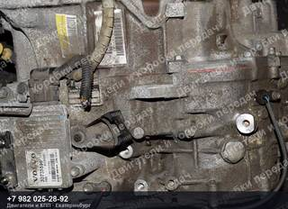
Контрактная АКПП Volvo C30/C70/S40/V50
двигатель B5254T, код 55-51SN
38 500 ₽
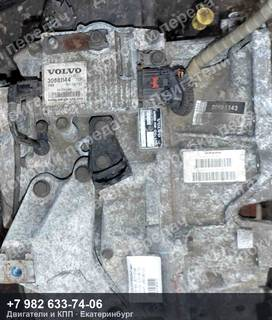
Контрактная АКПП Volvo C30/C70/S40/V50
двигатель B5254T, пробег 92 000 км
38 500 ₽
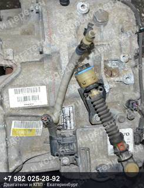
Контрактная АКПП Volvo C30/C70/S40/V50
двигатель B5254T, код 55-51SN
38 500 ₽
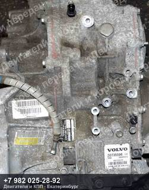
Контрактная АКПП Volvo C30/C70/S40/V50
двигатель B5254T, пробег 110 000 км, код 55-51SN
38 500 ₽
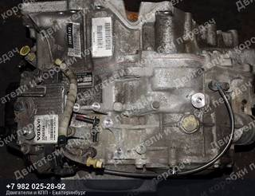
Контрактная АКПП Volvo S40/V50
двигатель B5254T, код 55-51SN
38 500 ₽
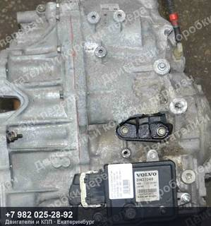
Контрактная АКПП Volvo S60/S80/V40/V60/V70
двигатель D4204T, пробег 44 000 км
57 000 ₽
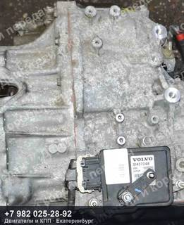
Контрактная АКПП Volvo S60/S80/V40/V60/V70
двигатель D4204T
72 000 ₽
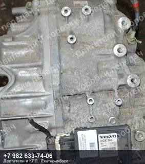
Контрактная АКПП Volvo S60/S80/V40/V60/V70/XC60
двигатель B4204T/B4204T11, пробег 113 000 км
86 500 ₽
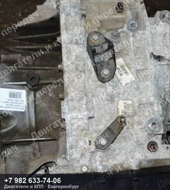
Контрактная АКПП Volvo S60/S80/V60
двигатель B4164T, пробег 114 000 км
42 000 ₽
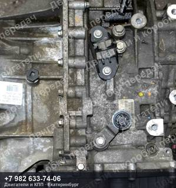
Контрактная АКПП Volvo S60/S80/V60
двигатель B4164T, пробег 52 000 км
42 000 ₽
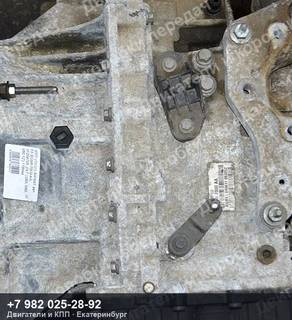
Контрактная АКПП Volvo S60/S80/V60
двигатель B4164T, пробег 119 000 км
42 000 ₽
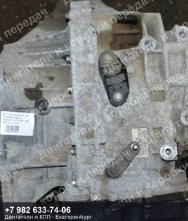
Контрактная АКПП Volvo S60/S80/V60
двигатель B4164T, пробег 113 000 км
42 000 ₽
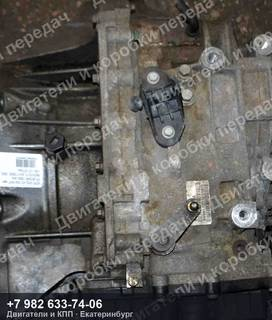
Контрактная АКПП Volvo S60/S80/V60
двигатель B4164T, пробег 57 000 км
42 000 ₽
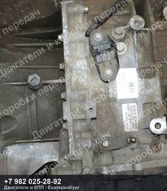
Контрактная АКПП Volvo S60/S80/V60
двигатель B4164T, пробег 91 000 км
42 000 ₽
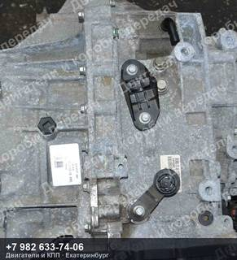
Контрактная АКПП Volvo S60/S80/V60/V70
двигатель B4164T, пробег 112 000 км
46 000 ₽
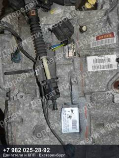
Контрактная АКПП Volvo S60/S80/V70
двигатель B5254T, пробег 67 000 км
46 000 ₽
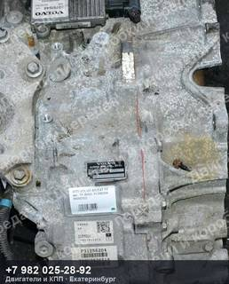
Контрактная АКПП Volvo S80/V70
двигатель B5254T, код TF-80SC
33 500 ₽
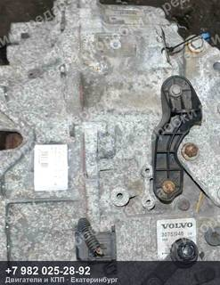
Контрактная АКПП Volvo S80/V70
двигатель B5254T, код TF-80SC
33 500 ₽
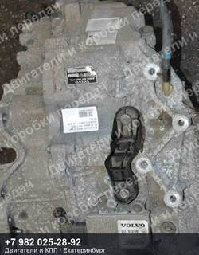
Контрактная АКПП Volvo S80/V70
двигатель B5254T, код TF-80SC
33 500 ₽
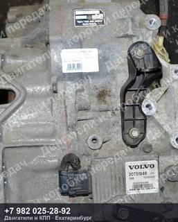
Контрактная АКПП Volvo S80/V70
двигатель B5254T, пробег 104 000 км, код TF-80SC
33 500 ₽
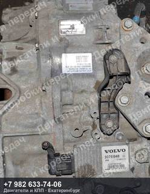
Контрактная АКПП Volvo S80/V70
двигатель B5254T, пробег 114 000 км, код TF-80SC
33 500 ₽
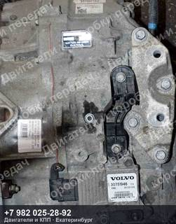
Контрактная АКПП Volvo S80/V70
двигатель B5254T, пробег 118 000 км, код TF-80SC
33 500 ₽
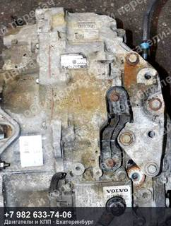
Контрактная АКПП Volvo S80/V70
двигатель B5254T, пробег 73 000 км, код TF-80SC
33 500 ₽
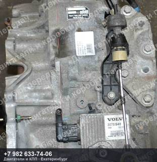
Контрактная АКПП Volvo S80/V70
двигатель B5254T, пробег 90 000 км, код TF-80SC
33 500 ₽
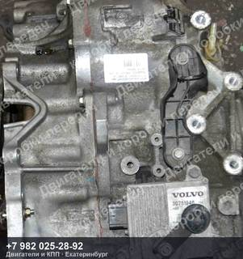
Контрактная АКПП Volvo S80/V70
двигатель B5254T, пробег 98 000 км, код TF-80SC
33 500 ₽
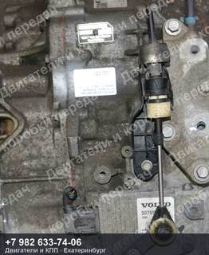
Контрактная АКПП Volvo S80/V70
двигатель B5254T, пробег 98 000 км, код TF-80SC
33 500 ₽
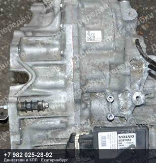
Контрактная АКПП Volvo V40
двигатель B4154T/B4154T4, пробег 116 000 км, код TF-71SC
73 500 ₽
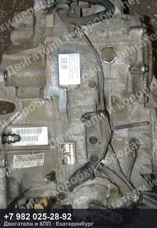
Контрактная АКПП Volvo V70/S60/S80
двигатель B5254T, пробег 86 000 км, код 50-51SN
86 500 ₽
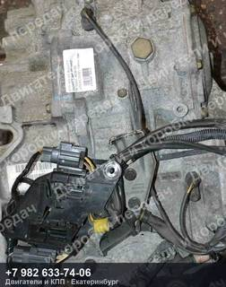
Контрактная АКПП Volvo V70/XC70
двигатель B5234T/B5244T, пробег 134 000 км
106 500 ₽
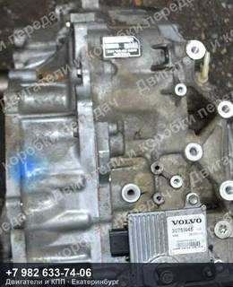
Контрактная АКПП Volvo XC60
двигатель B6304T/B6304T2, код TF-80SC
57 000 ₽
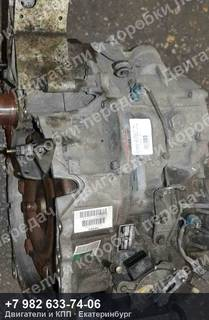
Контрактная АКПП Volvo XC70
двигатель B5254T, пробег 83 000 км, код 55-51SN
73 500 ₽
Не нашли свой контрактная АКПП?
Пришлите VIN или марку с моделью — проверим по складу и подберём то, что точно встанет на вашу машину. Ответим и подскажем, даже если у нас этого нет.